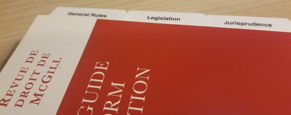

McGill Guide 9.1: Suggestions for improvement
I’ve said that citation layout is something that can and should be automated. But as long as we are doing this work ourselves, it is helpful to have clear rules. Clear rules will also make it easier to automate this work. There are several rules and examples in the McGill Guide that could use some extra clarity or correction.

Extra clarity needed
Here are some citation rules that I’ve had difficulty automating because of ambiguity in the McGill Guide. I’ll describe these and suggest some ways to make these rules clearer.
“cited to”
Section 3.6.2 of the McGill Guide says:
Cite the pinpoint reference to the most official reporter, mentioned first … If subsequently citing to pinpoints, add cited to after the short title, followed by the abbreviation in the reporter. No cited to is necessary when not subsequently referring to pinpoints or if the first citation contains a pinpoint.
They give this example:
Delgamuukw v British Columbia, 79 DLR (4th) 185, [1991] 3 WWR 97 (BCSC) [Delgamuukw cited to DLR].
First, this appears redundant. If the pinpoints must always refer to the “most official reporter, mentioned first”, then there is no need for the “cited to” annotation alongside the short form title.
Second, the example in Section 1.3.7 presents another difficulty (emphasis changed by me):
1 Roncarelli v Duplessis, [1959] SCR 121, 16 DLR (2d) 689, Rand J (discretionary decisions must be based on “considerations pertinent to the object of the administration” at 140); Oakwood Development Ltd v St François Xavier (Municipality), [1985] 2 SCR 164, 20 DLR (4th) 641, Wilson J [Oakwood cited to SCR] (“[the] failure of an administrative decision-maker to take into account a highly relevant consideration is just as erroneous as the improper importation of an extraneous consideration” at 174).
Why does Oakwood take a cited to, but Roncarelli does not? Roncarelli isn’t given a short-form, so possibly is never cited again in this hypothetical article. But maybe later references just use the full style of cause since it’s short enough, in which case a short-form would not need to be introduced here. But both citations contain a pinpoint, although moved into the parenthetical rather than placed alongside the main citation. If we use cited to to provide a reminder about which reporter’s page numbers are being used, surely both of these citations would require it equally.
My suggestion for the next revision of the McGill Guide is to remove the cited to element because the main citation—the first-listed reporter—is always the one cited to.
Form of citation when full style of cause is in the text
Did you know that when the full style of cause is in the text, you are not to include it in the citation? This little-known rule is presented in Section 3.3: “If the style of cause is indicated in the text, do not repeat it in the footnote.”
The only example of this is found in Section 1.4, as it is also an exception to the rule that every citation should have an introductory signal:
In R v Stinchcombe1, the court held that…
1 [1991] 3 SCR 326 at 333, 1991 CanLII 45 (SCC).
(The McGill Guide also has two errors in this example: the note number should come after the comma, and there is no need for the jurisdiction/court information “(SCC)” because it is evident from the title of the reporter “SCR”. The example just prior to this one in the McGill Guide got that right.)
This rule would be more clear and more widely known if that example were shown alongside the actual rule in Section 3.3. It should also be made clear that if the style of cause in the text is not the full style of cause of the actual case being cited (e.g. a more widely known style of cause from a lower court, like Eric v Lola) then the full style of cause needs to be included in the citation:
In Eric v Lola,1 the court held that…
1 Quebec (AG) v A, 2013 SCC 5 [Eric v Lola].
Combining citations, parenthetical information, pinpoints, and textual content in a footnote
The McGill Guide doesn’t give clear guidance on how to do this. The only examples they give are of parenthetical information within a citation at Section 1.3.7 (already shown above, but repeated here with original emphasis):
1 Roncarelli v Duplessis, [1959] SCR 121, 16 DLR (2d) 689, Rand J (discretionary decisions must be based on “considerations pertinent to the object of the administration” at 140); Oakwood Development Ltd v St François Xavier (Municipality), [1985] 2 SCR 164, 20 DLR (4th) 641, Wilson J [Oakwood cited to SCR] (“[the] failure of an administrative decision-maker to take into account a highly relevant consideration is just as erroneous as the improper importation of an extraneous consideration” at 174).
The McGill Guide doesn’t say how to subsequently include a parenthetical that quotes from Justice Taschereau’s dissent in Roncarelli.
Should that look like this?
2 Roncarelli v Duplessis, supra note 1 (“[l]‘absence de cet avis interdit aux tribunaux de prononcer aucune condamnation” at 140, Taschereau J, dissenting).
Or like this?
2 Roncarelli v Duplessis, supra note 1, Taschereau J, dissenting (“[l]‘absence de cet avis interdit aux tribunaux de prononcer aucune condamnation” at 140).
The McGill Guide clearly limits parenthetical information within a citation to a “brief description or quotation of not more than one sentence.” Often though, footnotes contain more information than would make sense in a parenthetical. There are few alternatives for how to present this.
You could just cite within the footnote as if you were writing body text with in-text citations (that is, set the citation off with a set of parentheses):
28 This method explains and expands on John Borrows’ innovative work, in which he approaches Indigenous stories as normative resources, analyzing a single Anishinabek story by retelling it in a case brief form (see John Borrows, Recovering Canada: The Resurgence of Indigenous Law (Toronto: University of Toronto Press, 2002) at 16–20).
There is also the extended introductory signal, which in this case even separates the author name from the article title:
50 See John Borrows’ rich discussion of some of this internal architecture in his article from this special issue, “Heroes, Tricksters, Monsters, and Caretakers: Indigenous Law and Legal Education” (2016) 61:4 McGill LJ 795.
There is the cite-then-explain approach:
31 See generally Bruce Granville Miller, Oral History on Trial: Recognizing Aboriginal Narratives in the Courts (Vancouver: UBC Press, 2011). Miller examined over thirty cases and concluded that…
The McGill Guide doesn’t advise which of these approaches to take, perhaps because it is not a style guide. The Chicago Manual of Style suggests, “When a note contains not only the source of a fact or quotation in the text but related substantive material as well, the source comes first. A period usually separates the citation from the commentary.” And, “When a note includes a quotation, the source normally follows the terminal punctuation of the quotation. The entire source need not be put in parentheses.”
My suggestion would be for the McGill Guide to explicitly recognize that variation between these approaches is okay, and that the choice should depend on how the footnote’s content relates to the accompanying body text. Sometimes, it will make sense to place the citation first and then some clarifying remarks. Sometimes, the purpose of the footnote is a clarification which itself happens to need a citation.
For editors or journals desiring more uniformity, they could adopt the recommendations of the Chicago Manual of Style on this point.
Corrections
There are also a few small errors that can easily be fixed:
- French Section 1.4.3 refers to note 59, which doesn’t exist. The corresponding example in the English section has an additional footnote which is missing from the French example.
- French Section 3.4 presents an example of what not to do. Perhaps that is intentional, but it would be the only such example in the McGill Guide and the corresponding example in the English section shows the correct citation.
The big picture
None of this REALLY matters. This isn’t what law or writing is about. But consistency and a degree of uniformity within a publication’s citations can be important to editors and readers. So, we will spend time trying to get these things right. I think the small changes suggested above could save writers and editors many hours that would be better spent on making our writing clearer or checking that our sources support our claims.
Notes
1. ↑ Canadian Guide to Uniform Legal Citation, 9th ed (Toronto: Thomson Reuters, 2018). This is one of Canada’s legal citation guides. It’s widely but not universally used, and it has been criticized as exclusionary. See Louis Mirando, “Legal Citation: Beyond the McGill Guide”, Slaw (8 December 2014).
2. ↑ By the way, the old Supreme Court Reports look so nice. Every page tells you whose words you’re reading with a cute little margin note. They use a didone/modern typeface. Footnotes are centred. Line spacing seems perfect. And blockquotes are clearly distinguished with a smaller size.
3. ↑ The following examples all come from Val Napoleon & Hadley Friedland, “An Inside Job: Engaging with Indigenous Legal Traditions through Stories” (2016) 61:4 McGill LJ 725.
4. ↑ The Chicago Manual of Style, 17th ed (Chicago: University of Chicago Press, 2017), ss 14.37, 14.38.